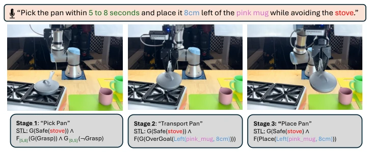
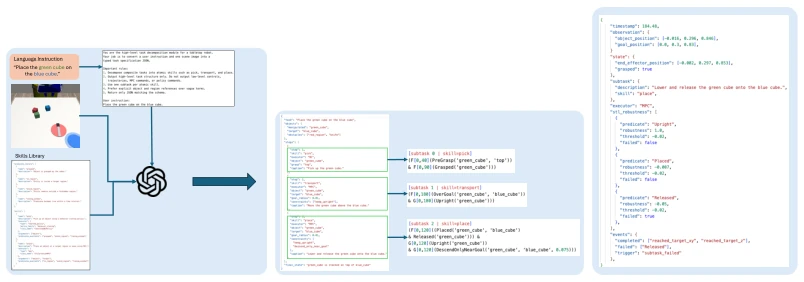
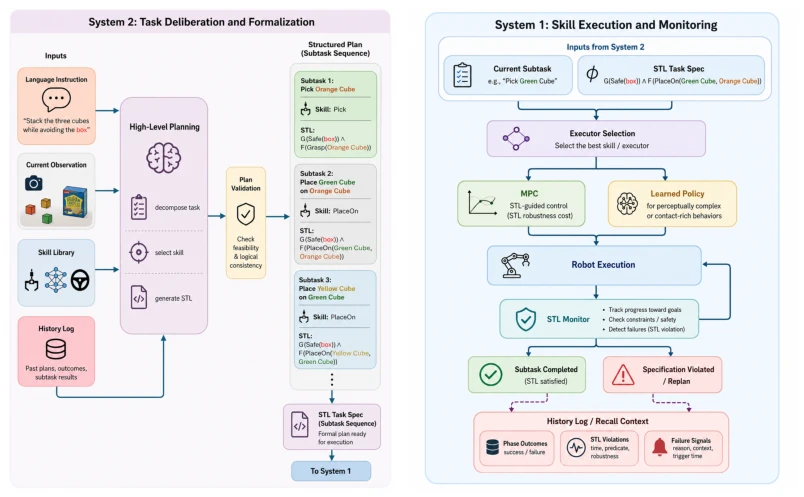

精确的语言条件机器人规划不仅需要完成粗略语义目标，还需满足时空逻辑要求。现有 VLA 模型泛化强但缺乏可解释性，难以遵循编码空间、时间和逻辑要求的精确指令 [1, 2, 3]。虽然近期双系统 VLA 架构分离了 System 2 推理和 System 1 执行，但并未指定如何表示或执行精确约束，导致策略可能满足意图但违反安全或时序条件。现有工作常将 STL 仅视为生成的规范或可行性检查 [28, 29]，而非贯穿控制管道的持久表示。我们需要一种机制，让 System 2 不仅规划，还能将要求形式化为 System 1 可监控和执行的规范，从而解决策略可能满足意图但违反安全或时序条件的问题，实现语言约束的显式化和可执行化。
—

Figure 1: A single language instruction can encode temporal (“within 5 to 8 seconds”) and spatial (“8cm left of the pink mug” and “avoiding the stove”) requirements simultaneously. Our framework decomposes the instruction into STL-annotated subtasks, where each stage carries the relevant con- straints as formal specifications that guide execution and monitoring.
Figure 2: Overview of STEP. System 2 uses the language instruction, current observation, skill library, and history log to decompose the task into subtasks and compile each subtask into an STL specification. System 1 executes the active subtask using the selected low-level policy or controller, while STL monitoring tracks progress and detects failures. Upon subtask completion or violation, the history log provides recall context for System 2 to update the plan while remaining grounded in the original task specification.

Figure 3: In-depth showcase of key components of our pipeline. a) Depicts how we construct a VLM prompt from a language instruction, along with an observation and system Skill Library. b) Shows the task specification, outlining each subtask, the VLM produces, and how that is compiled into a series of STL formulas. c) A simplified example of an entry in the History Log, showing how STL robustness is an integral part of task monitoring and failure detection.
Figure 4: Real World Results of our method compared to VLM-MPC-COST. We group the success rates based on the constraint type of the task. There is increased success all across the board from embedding STL, especially in temporal constraints.

Figure 6: Detailed views of the two modules in STEP. System 2 converts language, scene context, skill definitions, and recall context into an STL-annotated task specification. System 1 executes each subtask through either STL-guided MPC or a learned policy, while STL monitoring provides completion, violation, and recall signals.